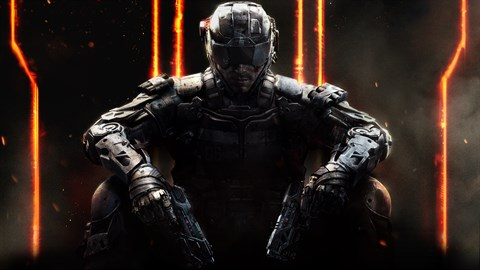

| Image of game |
Game name |
History of the game |
 |
Fortnite battle royal |
Fortnite is an online video game developed by Epic Games and released in 2017. It is available in three distinct game mode versions that otherwise share the same general gameplay and game engine: Fortnite Battle Royale, a free-to-play battle royale game in which up to 100 players fight to be the last person standing |
 |
Red dead redepmption 2 |
Red Dead Redemption 2[a] is a 2018 action-adventure game developed and published by Rockstar Games. The game is the third entry in the Red Dead series and a prequel to the 2010 game Red Dead Redemption. The story is set in a fictionalized representation of the United States in 1899 and follows the exploits of Arthur Morgan, an outlaw and member of the Van der Linde gang, who must deal with the decline of the Wild West while attempting to survive against government forces, rival gangs, and other adversaries. The game is presented through first- and third-person perspectives, and the player may freely roam in its interactive open world. Gameplay elements include shootouts, robberies, hunting, horseback riding, interacting with non-player characters, and maintaining the character's honor rating through moral choices and deeds. A bounty system governs the response of law enforcement and bounty hunters to crimes committed by the player. |
|  |
Call of dudy black opps 3 |
Call of Duty: Black Ops III is a 2015 first-person shooter game developed by Treyarch and published by Activision. Black Ops III takes place in 2065, 40 years after the events of Black Ops II, in a world facing upheaval from climate change and new technologies. Similar to its predecessors, the story follows a group of black ops soldiers. The game's campaign is designed to support 4-player cooperative gameplay, allowing for bigger, more open level design and less corridor shooting. As the player character is cybernetically enhanced, players have access to various special activities |